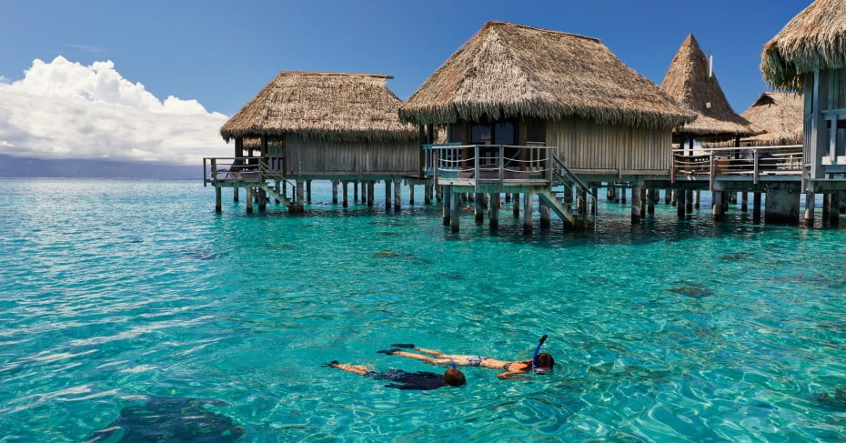
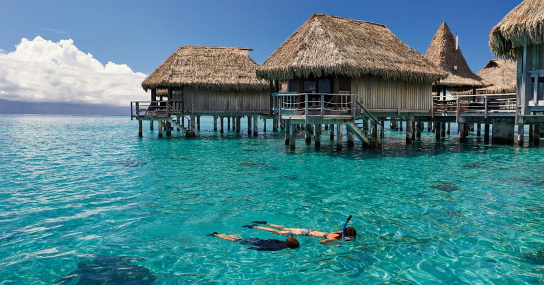

Attractions
- Taniti Volcano National Park — hike scenic trails and view the island’s active volcano.
- Coral Bay — clear turquoise waters ideal for snorkeling and scuba diving.
- Old Town Taniti — cobblestone streets lined with local shops, cafés, and markets.
- Rainforest Canopy Tour — zipline through lush jungle canopies filled with native wildlife.
- Taniti Cultural Center — experience traditional music, dance, and island crafts.
- Sunset Point — the island’s most popular spot to watch the sunset over the ocean.
- Fisherman’s Wharf — seafood restaurants and fishing charters along the harbor.
- Crystal Falls — a hidden waterfall deep in the tropical forest, accessible by guided hike.
- Laguna Resort Beach — luxury beachfront area with swimming, cocktails, and live music.
- Mount Haniti Lookout — panoramic views of Taniti’s coastline and coral reefs.


 
